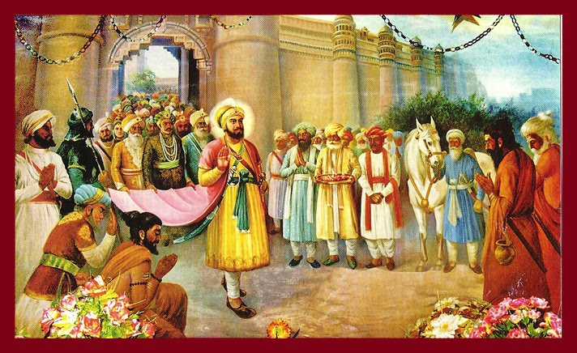

Sikhism


|  |
Mother Name: Mata Ganga ji Date of Birth: 5 July, 1595, Age: 50 years Place of Birth: Guru Ki Bdali,Amritsar, Wife: Children: Guru Tegh Bhadur,Baba Atal Rai,Baba Ani Rai,Baba Suraj Mal,Baba Gurdita,Bibi Biro Guruship: Joti-jot: March 19, 1644, Kiratpur Sahib
|
Guru Hargobind Ji is the Sixth Guru of the Sikhs. He was the only son of Guru Arjan Dev Ji. He was born on June 19th, 1595 at Guru Ki Wadali near Amritsar. He got his training in martial arts and spirituality from Baba Budha Ji Responsible for establishing the idea of inseparability of spiritual and temporal matters, the sixth Guru maintained an army for the purpose of protecting the poor and destroying tyrants. He constructed the Akal Takht Sahib, centre of temporal affairs in the Sikh religion, across from the Golden Temple in Amritsar. By this time, the Sikh community was a full-fledged social, religious, and political entity. Guru Hargobind Ji wore two swords of Miri (Temporal Power) and Piri (Spiritual Power) after martyrdom of Guru Arjan Dev Ji. He never allowed the temporal aspect to overpower spiritual aspect of his life. Guru Hargobind Ji transformed the Sikh saints into saint-soldiers. He gave a fine blend to the powers of Bhakti and Shakti. He called upon the Sikhs to protect human rights and stand for human liberty, equality and fraternity. Guru Hargobind Ji built Akal Takht Sahib in proximity of Sri Harmandar Sahib with the help of Baba Budha Ji and Bhai Gurdas Ji. He issued Hukams to the Sikhs to learn martial arts for self-defence. Guru Hargobind Ji fought many battles against atrocities of the Mughal Empire. He travelled extensively to preach the high limits of Sikhism. The Guru was arrested and put into Jail at Gawalior by the tyrant Mughals. He is called “Bandi Chhore” as he got 52 princes released from the Gawalior jail of the Mughals. On his release from jail, the residents of Amritsar illuminated Sri Harmandar Sahib Ji and fired crackers in rejoice. Since then, the Diwali festival is celebrated at Amritsar in memory of the Guru Ji. Out of total life of the Guru Ji, thirty-eight and a half years as pontificate Guru were full of historic events. Battles were thrusted upon him. Guru Hargobind Ji fought battles at Amritsar, Sri Hargobindpur, Lahira and Kartarpur. Sikh troops carried Nagara and Nishan Sahib Ji’s in the battles during the times of Guru Hargobind Ji. Guru Hargobind Ji shifted his head quarters from Amritsar to Kiratpur Sahib to get respite from the daily oppression caused by the Mughal forces. He left for his heavenly abode on March 2nd, 1644 at Kiratpur Sahib. Guru Har Rai Ji became the seventh Guru after the eternal rest of his grandfather Guru Hargobind Ji.